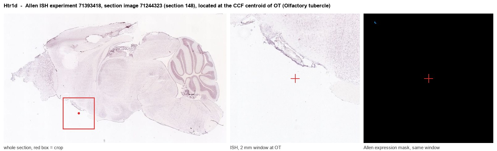
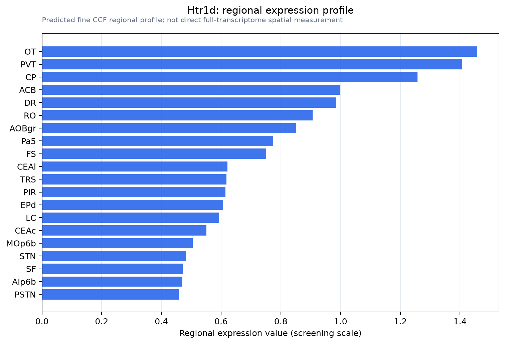

Htr1d
5-hydroxytryptamine receptor 1D (5-HT-1D) (5-HT1D) (Serotonin receptor 1D)
Spatial tier: RESTRICTED · Class: GPCR · Top region: OT (Olfactory tubercle) · Positive regions: 27/554
44.7Discovery Score
39.6Targetability Score
CEvidence grade C
What this means: Htr1d: fine CCF profile is restricted toward OT (top regions: OT, PVT, CP, ACB, DR; 27 positive regions); direct spatial validation is still required.
Function in OT: evidence, prediction, innovation
- Gene function
- Htr1d encodes the 5-HT1D serotonin receptor, a Gi/Go-coupled GPCR that lowers cAMP and suppresses transmitter release at nerve terminals. It is pharmacologically near-identical to 5-HT1B and is a triptan antimigraine target; brain expression is low and far more spatially restricted than Htr1b.
- Region function
- The olfactory tubercle is the olfactory ventral striatum, receiving direct mitral/tufted cell and dense VTA dopamine input; its D1 and D2 medium spiny neurons encode odour-reward associations, hedonics and motivated approach.
- Published in this region
- expression only Expression only. Bach et al. 1993 found the highest rat 5-HT1D mRNA signal by in situ hybridization in the pyramidal layer of the olfactory tubercle, plus caudate and accumbens. Bonaventure et al. 1998 confirmed in guinea pig that 5-HT1D mRNA is restricted and dominated by the olfactory tubercle, while 5-HT1D binding sites fell below detection, implying very low protein density. No physiological or behavioural manipulation in OT exists.
- Predicted function
- Prediction: OT 5-HT1D acts as an inhibitory brake on raphe serotonergic modulation, either presynaptically on glutamatergic and dopaminergic terminals or on MSN somata, damping cAMP/PKA signalling downstream of D1 receptors. Local blockade with BRL-15572 or conditional deletion should disinhibit OT output and enhance odour-cued approach and reward learning; agonism should blunt odour-driven motivation. Effects will be small because 5-HT1B dominates the same tissue.
- Innovation
- ★★★★☆ 4/5 OT is the highest-expressing structure for Htr1d mRNA, yet no functional study has targeted the receptor there.
- Tools
- BRL-15572 (5-HT1D antagonist) and SB-216641 (5-HT1B antagonist) permit subtype dissection; no Htr1d-Cre line published; OT cell types accessible with Drd1-Cre and Adora2a-Cre plus Cre-dependent AAV; Htr1d knockout/conditional alleles listed at MGI/IMPC.
- References
Direct evidence located at the region

Allen ISH experiment 71393418, section image 71244323 (section 148): the section that contains the CCF centroid of Olfactory tubercle according to the Allen image-to-atlas alignment (reference_to_image), with a 2 mm window around that point. Left: whole section, red box = window. Middle: ISH signal. Right: Allen's expression-mask view of the same window. open this image in the Allen viewer
Look it up yourself: Allen Mouse Brain ISH for Htr1dAllen reference atlas: OT (structure 754)ABC Atlas MERFISH viewer(in the ABC Atlas choose dataset MERFISH-C57BL6J-638850-CCF, colour cells by gene "Htr1d" or by parcellation_substructure "OT")All genes confined to OT + 3-D brain
Direct spatial evidence
MERFISH REGION LOCATOR

Regional expression figure

Predicted WMB × fine-CCF profile; not direct full-transcriptome spatial measurement.
Spatial profile
Evidence and specificity
- Evidence status
- PREDICTED_FINE
- Direct sources
- None; predicted localization only
- Exclusive threshold
- 12 positive regions out of 554
- Spatial specificity
- 0.322
- Top-region fraction
- 0.056
- Filter status
- PASS
Interpretation limits
- Cell-type-to-region projection is imputed expression, not direct spatial measurement.
- Adult reference atlases do not establish stability across age, sex, strain, state, or disease.
- Transcript abundance does not guarantee protein abundance or genetic-tool performance.